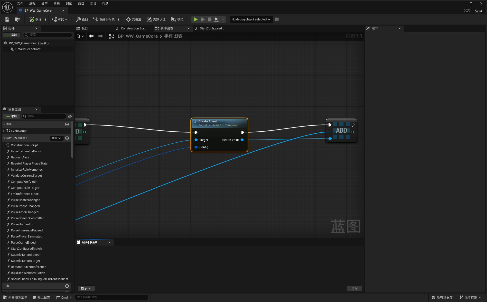

Blueprint · Gameplay · Independent memory
Give every character its own conversation
This tutorial creates one Agent per game role, routes knowledge to the Agents that should know it, and verifies memory instead of trying to repair missing state with prompt wording.
The multi-Agent model
| Shared once per process | Independent for every Agent |
|---|---|
| GPU model, runtime status, serial inference queue, project sampling defaults | Display name, system prompt, tool declarations, canonical memory, active request, lifecycle |
Use an Agent when an object needs its own memory. Examples include NPCs, party members, judges, game roles, multiple chat tabs, and simulations such as Werewolf.
1. Prepare the Blueprint data
Create an Agents container
Add an array named Conversations with type Lite Rt Lm Agent Object Reference. If you frequently select by role ID, also keep a Map from your role/player ID to Agent.
Define role records
Each role should provide a stable ID, display name, system prompt, and optional tool declaration JSON. Keep secret role knowledge in the role’s own prompt or selected memory—not in a shared prompt.
2. Create one Agent per role
- Loop over your role/player records.
- Create a
Lite Rt Lm Agent Config. - Set
Display Name,System Prompt, and optionalTool Declarations Json. - Call
Create Conversation (Advanced). - Add the returned Agent to the array or ID map.
Get LiteRT-LM Runtime → Create Agent creates the same kind of Agent. The scenario factory Create Conversation (Advanced) is simply easier to discover in new Blueprint graphs.
LiteRtLmAgents. New Blueprints may use the equivalent scenario factory.3. Bind events and keep result identity
Bind each Agent’s events immediately after creation:
On Completed: final text, tool calls, memory snapshot, metrics, and error fields.On Text Chunk: streaming UI.On Error: configuration or rejected-request errors.On State Changed: Created, loading, ready, running, or terminal UI state.On Memory Changed: optional save/UI observation.
The result delegate does not add your gameplay role ID. Use a dedicated handler per role, a small owner object/component per Agent, or a Request ID → role mapping created when you call Ask. Do not rely on “the last loop index” after asynchronous completion.
4. Ask the correct Agent
Select by stable gameplay identity
Resolve the current speaker/player ID to its Agent, check validity and Is Busy, then call Ask. Store the returned Request ID with that role until the completion event arrives.
5. Route public and private information
A public game event
Call Append Memory Message to Conversations with the relevant Agent array. Store the actual event, for example:
Role: user
Content: [Game Event] During day 2, Player 3 openly claimed to be a werewolf.This changes memory without running inference. Every valid unique Agent receives the same canonical message.
A private game event
Resolve only the Agents that should know it and call Append Memory Message on those Agents. Examples: wolf teammates, the seer’s inspection result, a private quest, or an NPC-only fact.
6. Use lower-entropy options for game decisions
For votes, tool selection, or other structured decisions, make request options with:
Make Precise Decision Ask Optionsfor low-entropy decisions without thinking.Make Reasoned Decision Ask Optionsfor a fixed-seed, thought-enabled structured decision.
Prefer a tool declaration such as vote_player with a required integer player ID. Game code executes and validates the action; the model should not directly mutate match state.
If a response fails validation, call Reject Last Response before retrying. This removes the terminal assistant message while retaining the input that produced it, so a bad decision is not reinforced in canonical memory.
Werewolf test: a player openly reveals as a wolf
This is a useful end-to-end context test because the expected next vote is easy to inspect.
- Start a match and create one Agent for every AI player.
- When the human says “I am a wolf; my teammate is Player 4,” treat the spoken sentence as a real public game event.
- Append that event to every living player conversation. Do not append secret engine truth that was never spoken.
- Before voting, export each relevant Agent’s memory and verify the exact event is present.
- Ask each living AI Agent to vote using the decision/tool schema.
- Validate that its target is alive and eligible. Log Request ID, Agent ID, target, and validation result.
Debug “the AI ignored the conversation”
| Check in this order | What it proves |
|---|---|
| 1. Agent identity Log Get Agent Id and Display Name at create/ask/complete. | You asked the same object whose memory you inspected. |
| 2. Lifetime Confirm the array/map still owns the Agent and no new Agent replaced it. | The conversation was not silently recreated. |
| 3. Canonical memory Use Export Memory Json immediately before Ask. | The model input contains the game event. |
| 4. Request identity Match completion to the Request ID returned by Ask. | An older queued result was not applied to the current turn. |
| 5. Decision contract Inspect tool call arguments and validation output. | Parsing or game validation did not discard the model’s actual choice. |
| 6. Diagnostics Temporarily enable detailed diagnostics. | The complete context and runtime result can be correlated on disk. |
End or replace the match safely
Call Close and Clear Conversations on your array. Keep Unbind Events Before Close enabled when replacing a whole match or scene, so cancelled callbacks from old requests cannot enter the new state machine. Then clear any Request ID mappings and gameplay owners.